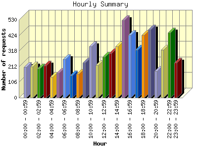
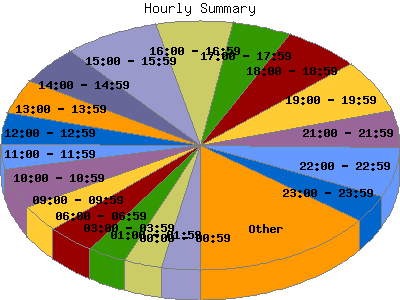

Report generated by Analog 6.0 and Report Magic 2.21
|
Web Server Statistics for "Harish Narayanan (hnarayan) - March 2005" Report generated by Analog 6.0 and Report Magic 2.21 |
The Hourly Summary identifies the level of activity broken down by each hour. Remember that one page hit can result in several server requests as the images for each page are loaded. This summary also compares the level of activity during working hours and after hours as a total for the report time frame.


| Hour | Number of requests | Number of bytes transferred | Percentage of the bytes | Percentage of the requests | |
|---|---|---|---|---|---|
| 1. | 00:00 - 00:59 | 209 | 6.159 MB | 2.34% | 3.07% |
| 2. | 01:00 - 01:59 | 211 | 6.814 MB | 2.59% | 3.10% |
| 3. | 02:00 - 02:59 | 199 | 8.152 MB | 3.10% | 2.92% |
| 4. | 03:00 - 03:59 | 217 | 10.607 MB | 4.03% | 3.19% |
| 5. | 04:00 - 04:59 | 140 | 41.618 MB | 15.82% | 2.06% |
| 6. | 05:00 - 05:59 | 167 | 9.816 MB | 3.73% | 2.45% |
| 7. | 06:00 - 06:59 | 261 | 11.102 MB | 4.22% | 3.83% |
| 8. | 07:00 - 07:59 | 150 | 3.451 MB | 1.31% | 2.20% |
| 9. | 08:00 - 08:59 | 161 | 6.936 MB | 2.64% | 2.37% |
| 10. | 09:00 - 09:59 | 238 | 7.344 MB | 2.79% | 3.50% |
| 11. | 10:00 - 10:59 | 348 | 8.881 MB | 3.38% | 5.11% |
| 12. | 11:00 - 11:59 | 223 | 7.619 MB | 2.90% | 3.28% |
| 13. | 12:00 - 12:59 | 277 | 7.514 MB | 2.86% | 4.07% |
| 14. | 13:00 - 13:59 | 301 | 10.255 MB | 3.90% | 4.42% |
| 15. | 14:00 - 14:59 | 350 | 9.635 MB | 3.66% | 5.14% |
| 16. | 15:00 - 15:59 | 525 | 16.977 MB | 6.45% | 7.71% |
| 17. | 16:00 - 16:59 | 427 | 11.269 MB | 4.28% | 6.27% |
| 18. | 17:00 - 17:59 | 324 | 10.912 MB | 4.15% | 4.76% |
| 19. | 18:00 - 18:59 | 426 | 13.912 MB | 5.29% | 6.26% |
| 20. | 19:00 - 19:59 | 462 | 21.601 MB | 8.21% | 6.79% |
| 21. | 20:00 - 20:59 | 182 | 6.022 MB | 2.29% | 2.67% |
| 22. | 21:00 - 21:59 | 327 | 8.066 MB | 3.06% | 4.80% |
| 23. | 22:00 - 22:59 | 444 | 7.556 MB | 2.87% | 6.52% |
| 24. | 23:00 - 23:59 | 239 | 10.899 MB | 4.14% | 3.51% |
| Work Hours (8:00am-4:59pm) | 2,850 | 86.429 MB | 32.85% | 41.86% | |
| After Hours (5:00pm-7:59am) | 3,958 | 176.686 MB | 67.15% | 58.14% | |
This report was generated on April 10, 2005 14:07.
Report time frame March 1, 2005 00:01 to March 31, 2005 23:55.
| Web statistics report produced by: | |
 Analog 6.0 Analog 6.0 |  Report Magic 2.21 Report Magic 2.21 |